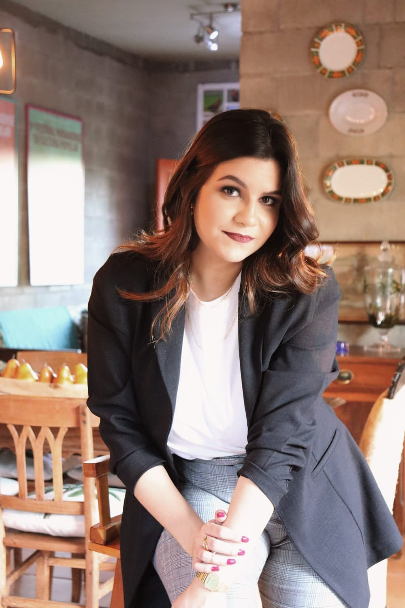

Psicologa Clinica
JOVANA FERRAZ
"Se percebemos que a vida realmente tem um sentido,
percebemos também que somos úteis uns aos outros.
Ser um ser humano, é trabalhar para alguém além de si mesmo".
— Viktor Frankl
